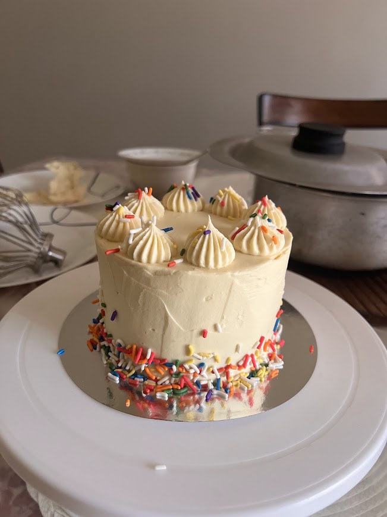

My Love for Baking and Cooking
Welcome to my website! One of my favorite things to do in my free time is to bake and cook. I enjoy being in the kitchen because it allows me to be as creative as I want, try new recipes from all over the world, and make food to share with my friends and family.
How I Became Interested in Baking and Cooking
Baking and cooking have always been an important part of my life. My love for it was taught by my dad. I would enjoy learning from him as he taught me how different ingredients work together and how even a simple recipe could become something so delicious. One of my earliest memories of him teaching me was when he baked me a Cinderella princess cake for my 6th birthday. I remember pouring the batter into a round bowl, so that when it baked, it would take the shape of the princess gown.

Some of My Favorite Things to Make
- Cakes
- Cookies
- Cupcakes
- Pasta dishes
- Homemade desserts
Why I Enjoy Cooking
Cooking has given me so much exposure to different cuisines. It has allowed me to explore different areas of the world from my very own kitchen! It has also shown me how to be creative while also learning useful skills. I enjoy picking out different ingredients, preparing them, and seeing the finished product. I also just really enjoy cooking for my family and friends because sharing food has brought me so much closer to them and has been a great way to spend time together.
My Favorite Part of Baking
My favorite part of baking is seeing the final result after putting time and effort into a recipe. Baking has always been more of a science project than cooking. It requires exact ingredients and precision, which helps me work on doing my best to achieve perfection. Decorating cakes and other desserts is also fun because I can use my creativity to make each dessert not only taste different, but look different and breathtaking too. But most of all, my biggest motivation is being able to eat all these different things.
My Future Goals
I would like to continue improving my baking and cooking skills. I want to continue to learn even more recipes, experiment with different ingredients, and become even more confident in the kitchen. I also hope to continue sharing my love for food.